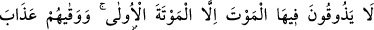
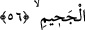

perdelenmesinden emindirler.
“Her meyveyi isterler” bunlar görünüşte iri gözlü hûrîlerle zevkyâb ve canlarının
çektiği nîmetlerle meşgul olup kalbleriyle ise yüce Zât’a yönelmiş olarak o Zât’ın
cemâlini müşâhede hâlindedirler.
56. Orada ilk ölümden başka ölüm tadmazlar (sürekli yaşarlar). Ve (Allah) onları
cehennem azâbından korumuştur.
“Orada” yani cennetlerde “ilk ölümden başka ölüm tadmazlar (sürekli yaşarlar).”
Mevt ve mevte kelimeleri nefh ve nefha gibi aynı fiilden masdardırlar. Ancak mevte
mevtten daha husûsîdir. Çünkü mevte vahdet, mevt ise cins için kullanılır. Bu durumda
mevte mevt cinsinden bir parça olmaktadır. Mevt tek bir ferddir. Vahdeti nefyetmek,
cinsi nefyetmekten daha belîğ ve mânîdârdır. Öyle olunca bu vahdeti nefyetmek
kendilerinden ölümü nefyetme konusunda daha kuvvetli ve daha te’sirli olmuştur. Sanki
Allah Teâlâ demektedir ki, cennette ölümden hiçbir şey; yani kendisine ölüm denecek
olan şeyi onlara tattırmayacaktır. Bahru’l-‘ulûm’da böyledir.
Burada istisnâ-i munkatı vardır. Yani cennette ölüm tatmayacaklardır. Ancak birinci
ölüm hariç ki zaten onu cennete girmeden önce tatmışlardı. Yani birinci ölümü dünyada
tadarlar. Mü’minlerin ölümü budur. Sonra yeniden diriltilip cennete girdiklerinde
hayatlarına devam ederler. Şu bilinmektedir ki, insanlar canlı her varlığın öleceğine
inanmışlardır, fakat Hak Teâlâ haber vermiştir ki cennet hayatında ölüm yoktur; aksine
cennet hayatı ebedîdir. Cennet ehlinin hoş hayatları ebedî hayatla beraberdir. Cehennem
ehli böyle değildir. Zîrâ onların hayatı hayat değildir. Gerçi onlar orada ne ölürler, ne
de yaşarlar.
Denilmiştir ki: Cennette on şey yoktur. İhtiyarlık, ölüm, uyku, gece, gündüz, karanlık,
sıcak, soğuk ve cennetten çıkış yoktur. Âyetteki istisnâ muttasıl da olabilir. Bu durumda
ölümü tatmamaktan murâd, mutlak mânâda cennette ölümü tatmalarının muhal olmasıdır.
Sanki şöyle buyrulmuştur: Cennette ölümü tatmazlar. Bu durum, ancak ilk ölümün tadını
gelecekte tatma imkânı olduğu zaman olabilirdi. Geçmiş olan bir şeyin tadını gelecekte
tatmak ise mümkün değildir. Özellikle ebedî hayat yurdu olan cennette böyle bir şey
olamaz. Bu yorumla hüküm, muhal olan bir şeye bağlanmış oluyor. Benzer şekilde Allah
Teâlâ’nın şöyle buyurmuş olduğu gibi: “Geçmişte olanlar hariç, artık babalarınızın
evlendiği kadınlarla evlenmeyin!” (en-Nisâ, 4/22) Yani onlar kesinlikle bir ölüm
tatmazlar, demektir. Aynı şekilde kesinlikle geçmişte babalarının nikâhlı eşlerini de asla